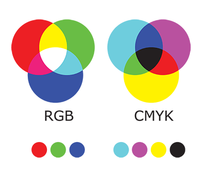

Het RGB model is wat je nu gebruikt om deze website te bekijken. RGB is een afkorting van R voor rood (red), G voor groen (green) en B voor blauw (blue). Dit model wordt gebruikt door ongeveer alle schermen waar je naar kijkt. Dat werkt zo: je computerscherm bestaat uit heel veel pixels. Die pixels bestaan dan weer per pixel uit 3 lampjes met de kleuren rood, groen en blauw. Is je hele scherm geel, dan staan dus het rode en het groene lampje aan om de kleur geel te maken. Als iets op je scherm zwart is, dan staan de lampjes helemaal uit. Daarom is 'Dark Mode' op je apparaten vaak beter voor de batterijduur, anders zijn pagina's vaak grotendeels wit en dan moeten alle lampjes aan staan wat een stuk meer elektriciteit kost. Alleen is een lampje natuurlijk niet zo vaak of helemaal aan, of helemaal uit. Vaak worden kleuren gemixt om verschillende tinten van een kleur te hebben. De cijfers 0 t/m 255 worden gebruikt om de hoeveelheid van de drie kleuren aan te geven, deze worden dan toegevoegd aan je zwarte beeldscherm. Zo is dit stukje tekst 146 rood, 35 groen en 236 blauw. Dit kan je computer dan weer omzetten naar binair (klik hier voor meer informatie over het binair stelsel) en zo je scherm aansturen welke lampjes aan en uit moeten, en hoe fel ze moeten. Oke, dus je schermen gebruiken RGB. Dan hebben we ook nog het CMYK model, dat zijn de twee belangrijkste kleurmodellen.
Dit model wordt gebruikt door printers. Als je dus een afbeelding wilt uitprinten, dan zal die niet precies uit de printer rollen zoals je de afbeelding op je scherm ziet. Beide apparaten gebruiken namelijk een verschillend kleurmodel. Dit is zo omdat je bij het RGB model de kleuren toevoegt aan je zwarte beeldscherm, en papier is (meestal) wit. Hier kan je dus geen RGB voor gebruiken. Maar wel het CMYK model! Dit model bestaat uit de kleuren cyaan (cyan), magenta en geel (yellow). Deze kleuren maken samen geen zwart, maar eerder een soort donkergrijs wat niet handig is om te printen omdat het een hoop inkt kost en lang moet drogen. Hiervoor is de laatste letter van het CMYK model in het leven geroepen: K voor: black...? Ah tuurlijk, het RGB model heeft de B al ingenomen voor blauw/blue, als je dan ook de b voor black zou gebruiken wordt het wel erg ingewikkeld. K voor zwart/black dus. Als je alleen een tekst pagina wilt printen, dan hoef je dus niet je hele voorraad cyaan, magenta en gele inkt erdoorheen te werken maar wordt gewoon zwart gebruikt.